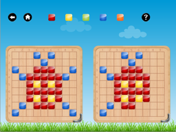

-
WHAT IS MONTESSORI BLOCKS?

- 

- MONTESSORI BLOCKS is a very simple, interesting, and educational block game.
- The playing rules are very straightforward. The player needs to choose one block
from five colors and move it to the right board. As long as the right
pattern is the same as the left model, the pattern player is successful.
- It is designed for kids from 2-10 years old.
-
WHY MONTESSORI?
- MONTESSORI BLOCKS is a Montessori based educational game. In the Montessori classroom the kids are always encouraged to LEARN BY DOING which requires the spontaneous investigation and practice. By playing MONTESSORI BLOCKS the kids will naturally abstract the information of color, quantity and direction from the model pattern and the abstracted information will instruct them to move the blocks and form their own pattern. It is exactly the process of LEARNING BY DOING.
-
Features
- A good experiment for number and colors. Kids need to apply their knowledge of number, color, and shape spontaneously in their playing. This process will help them to strengthen the concept deeply and personally.
- Very simple rules, and broad spans of difficulties, good for kids from 2 years to 10 years old.
- By locating the position through quantity and direction in a two-dimensional space, young players can set up the very basic concept of coordinate.
- Learn the name of the objects, alphabets, and numbers.
- A great coordination practice of hands, brain, and eyes.
-
PLAY ASSITANCE AND SETTINGS
-
HELP (?)
Clicking help icon (?) , the Green X will show the right
position to put the block and the Red X will indicate the
position occupied wrongly by the block.
ROTATE BOARD
On the top and left side of the board, there are position numbers for every row and column of the board.
Clicking the board rotater , the player can choose to show or hide the position number.
SOUND HINT
Go to Main Menu -> For Parents-> Set Sound Hint.
Enable: The player will get a sound hint when they play wrong.
Disable: No hint, more challenge.
GAME RESET
Go to Main Menu -> For parents -> Reset the Game, and the current level
playing record will be deleted. You will start from the very begging level next time.
-
BE OUR PATTERN DESIGNER!
If your kids are very creative and make a different nice pattern,
please capture the screen through home - power button and email it to
us. We will show many other pattern designs on our website and may
use it as our model pattern in the future version. You will receive
a gift from us if your work is selected!